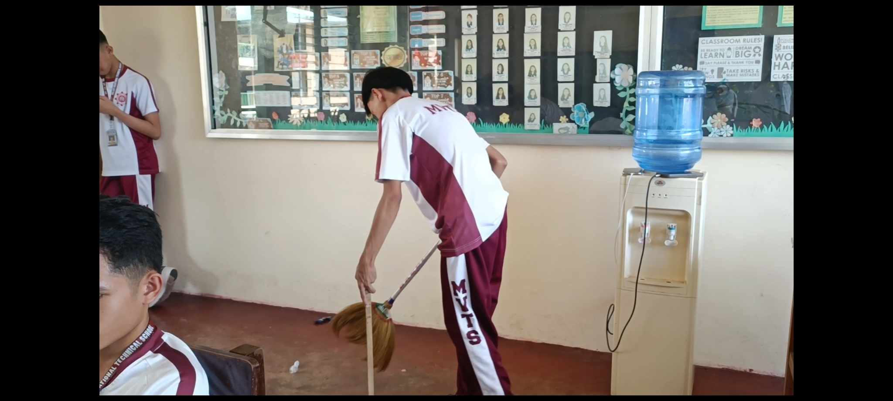

Home
Understanding Cleanliness

Maintaining cleanliness in schools is crucial for several reasons. Firstly, it ensures the health and safety of students and staff by minimizing the spread of germs and preventing illnesses. Secondly, a clean environment creates a positive atmosphere for learning, promoting focus and productivity among students. Lastly, advocating for cleanliness instills a sense of responsibility and respect for the school community, empowering students to take pride in their surroundings. By prioritizing cleanliness, schools can foster a healthier, more conducive learning environment while promoting good habits and values among students.